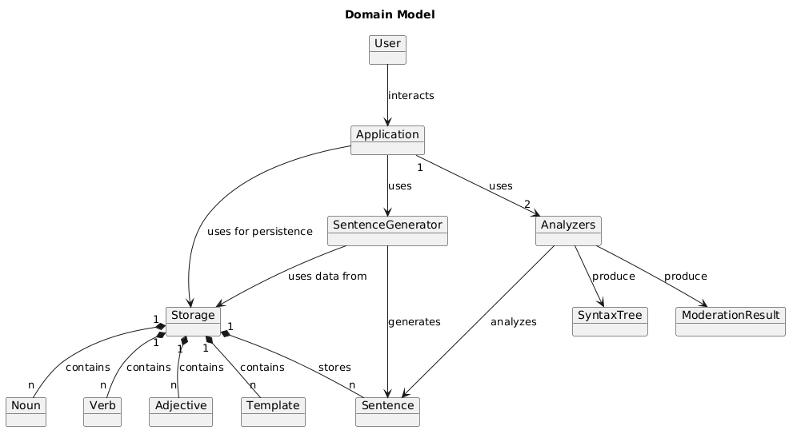
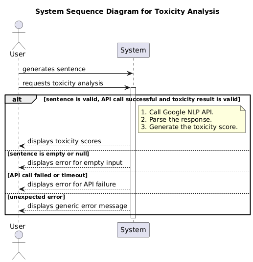
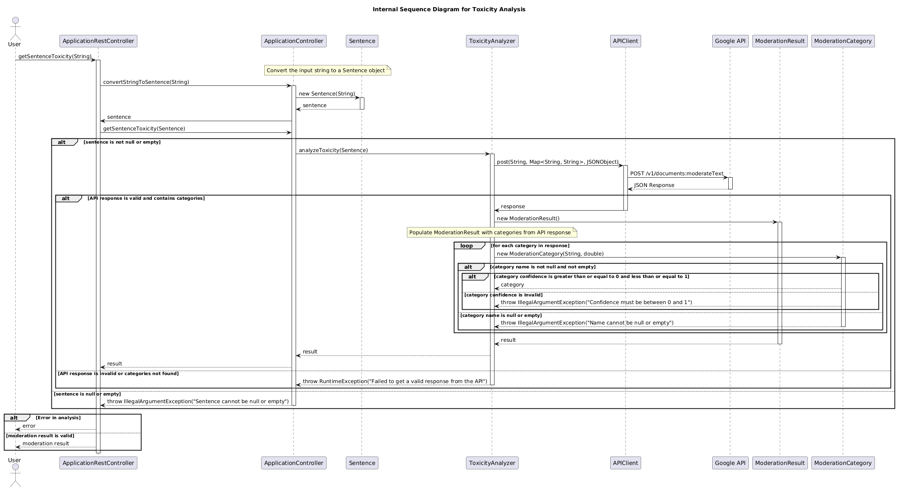

Design Document
Domain Model

System Sequence Diagrams
Syntax Analysis

Sentence Generation

Toxicity Analysis

Visualizing the Sentence History

Design Class Model

Used Design Patterns
Our project's architecture is shaped by several key design patterns that help us manage complexity, improve flexibility, and keep the code maintainable. Here’s a look at the patterns we've employed:
- Singleton: We've used the Singleton pattern for the
WordsDictionaryandSentenceHistoryclasses. This ensures that there's only one, globally accessible instance for each. It's crucial for maintaining a consistent state for our word collection and the history of generated sentences across the entire application. - Factory Method (Simple Factory): The
SentenceGeneratorclass acts as a factory. It encapsulates the complex logic of creatingSentenceobjects. This decouples the rest of the application from the specifics of sentence construction, allowing us to change how sentences are built without affecting the code that requests them. - Facade: The
ApplicationControllerserves as a Facade, providing a simple and clean interface to the more complex underlying subsystems. It coordinates theSentenceGenerator,SyntaxAnalyzer,ToxicityAnalyzer, andStorageManager, so the client only needs to interact with this single entry point through theApplicationRestControllerendpoints. - Repository (DAO): Our
StorageManagerclass implements the Repository pattern. It abstracts and handles all the details of data persistence (reading from and writing to files). This isolates the data access logic, meaning we could swap our storage mechanism (e.g., from files to a database) with minimal impact on the rest of the system. - Composite: The
SyntaxTreeandSyntaxNodeclasses work together to form a Composite pattern. This allows us to build a tree structure representing a sentence's syntax and treat both individual words (SyntaxNode) and the entire tree (SyntaxTree) in a uniform way. - Adapter: The
APIClientclass functions as an Adapter. It translates requests from our application into the format required by the external Google NLP and Moderation APIs, hiding the complexity of the direct API communication from theSyntaxAnalyzerandToxicityAnalyzer. - Strategy: The use of
Templateobjects within theSentenceGeneratorhints at the Strategy pattern. Each template defines a different "strategy" or structure for creating a sentence. This allows us to easily add new sentence structures by simply creating new templates, without modifying the generator itself.
Internal Sequence Diagrams
Sentence Generation

Syntax Analysis

Toxicity Analysis

Visualizing the Sentence History